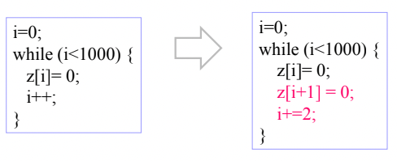
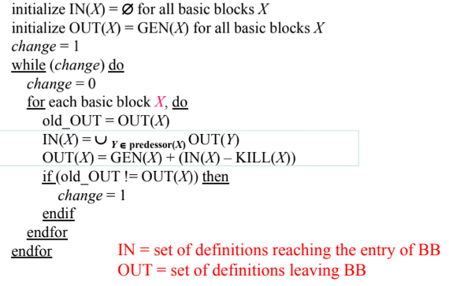

충남대학교 컴퓨터공학과 조은선 교수님의 "컴파일러 개론" 강의를 필기한 내용입니다.
다소 잘못된 내용과 구어적 표현 이 포함되어 있을 수 있습니다.
Analysis & Optimization
- 최적화(Optimization) 은 동등한 동작을 수행하되 실행시간이 짧거나 저장공간을 적게 먹는 코드로 바꾸는 것을 의미함
- 최적화는 당연히 Instruction의 수를 줄이거나 Cycle이 더 적은 Instruction을 사용하는 방법으로 진행되는데
- 최적화에서 가장 중요한 것이 최적화 이후에도 동일하게 동작해야 하는것 이기 때문에 분석(Analysis) 을 통해 동일하게 동작하는지를 확인하게 된다
Control Flow
- Control Flow는 프로그램이 수행되는 순서를 말하는건데
- 그냥 Program Counter가 1씩 증가하며 Instruction이 쭉 실행되는 경우에는 별로 분석할게 없다
- 중요한건 분기(Branch) 로 프로그램의 다른 부분으로 점프하는 흐름에 관한 것이 Control Flow 인 것
- Dynamic Control Flow 는 Input값이 주어진 상태에서의 프로그램 실행 순서라고 생각하면 된다
- Input값을 알기 때문에 어디로 분기할지 알 수 있고, Control Flow를 보다 정확하게 예측할 수 있음
- Input값이 다르게 들어오면 다르게 실행되므로 Dynamic이 붙는 것
- Static Control Flow는 Input 값을 모르는 상태에서의 프로그램 실행 순서를 말하는거다
- 따라서 Input을 모르기 때문에 정확한 예측은 불가능하고 Worst Case를 생각해서 예측하게 된댄다
- 컴파일 단계에 하게 된다는 듯
Static Property, CFA
- 일단 Static Property는 프로그램 분기 방향과 무관하게 도출되는 성질을 의미한다
- 그리고 CFA(Control Flow Analysis) 는
- 먼저 CFG(Control Flow Graph) 라는 것을 만든다
- 이건 프로그램이 어떻게 분기될 수 있는지의 경우의 수를 그래프 형태로 나타낸 것
- 그리고 이걸 만든 후에 Static Property를 도출하고
- 코드를 최적화 하는 것이 목적인 분석이다
Basic Block(BB)
- Basic Block(BB) 는 분기 없이 한번에 쭉 실행되는 Instruction 모음이라고 생각하면 됨
- 뭐 동일한 실행 조건(Execution Condition) 을 적용받는 Instruction 모음이라고도 표현하는데
- 이말은 BB의 첫번째 Instruction이 실행된다면 마지막까지 무조건 실행된다는 뜻이다
- 따라서 다음의 조건을 만족하는 Instruction 묶음을 BB라고 한다
- 일단 BB의 시작은 무조건 첫번째 Instruction이다 - 다른곳에서 분기되어 들어와 BB의 중간에서 갑자기 실행되면 안됨
- 그리고 BB의 끝은 무조건 마지막 Instruction이고 이거 외에는 분기가 없다 - 말그대로 BB의 중간에서 갑자기 다른데로 분기하면 안됨
- BB를 구하는 방법은 간단하다
- 우선 Leader를 구해야 됨 - 이건 BB의 첫번째 Instruction을 의미하는 거임
- Leader를 구하는 방법도 간단함
- 프로그램의 시작 Instruction은 무조건 Leader겠제
- 그리고 분기해서 도착하는 Instruction도 Leader가 된다 - 분기해서 도착했으니까 거기서부터 시작이 되겠지
- 마지막으로 분기문의 바로 아래에 있는 Instruction도 Leader이다
- 왜냐하면 이전의 기억을 더듬어보면 특정한 조건일때 분기하고 그 조건에 안맞으면 그냥 다음 Instruction이 실행되게 하는 방식으로 두 갈래를 나누기 때문
- 이렇게 Leader를 다 구하고 한 Leader에 대해 다음 Leader이전까지의 부분이 하나의 BB가 되는 것
- 우선 Leader를 구해야 됨 - 이건 BB의 첫번째 Instruction을 의미하는 거임

- 위 예시에서 보면
- 일단 L1이 프로그램의 시작지점이니까 Leader가 되고
- L2하고 L10이 분기되어 도착하는 곳이니까 이곳도 Leader가 된다
- 또한 분기문의 직후인 L4, L7, L8도 Leader임
- 따라서 BB를 묶어보면 L1-L1, L2-L3, L4-L6, L7-L7, L8-L9, L10-L11이 됨
Control Flow Graph(CFG)
- BB를 노드로 하고 그것들의 실행 순서를 화살표 Edge로 연결한 그래프를 일컫는 말임
- 모든 BB가 노드가 되고 여기에 시작지점과 끝나는 지점을 나타내는 가상의 노드인 Entry Node와 Exit Node를 붙인다
- 당연히 가상의 노드이기 때문에 프로그램상에는 표현되지 않음

- 위의 예시 BB대로 그린 CFG의 예시임
- 물론 여기에는 Entry Node와 Exit Node가 표현되어있지 않지만 그냥 보통 그런 Node들을 붙인다는거지 무조건 붙여야되는건 아니다
- 일단 무조건 분기하는 부분이 없으니까 모든 BB들을 다 이어주고
- L3에서 L10으로 분기하니까 L3가 속한 BB2에서 L10이 속한 BB6으로 Edge가 연결된다
- 마찬가지로 L6에서 L2로 분기하니까 BB3에서 BB2로 Edge가 연결되어있고
- L7에서 L10으로 분기하니까 BB4에서 BB6으로 Edge가 연결되어 있는 것
Weighted CFG
- Profiling이라는 것이 있는데 얘는 프로그램을 몇번 돌려보고 여러가지 통계를 내는 것이다
- Edge Profile : 각 Edge들을 몇번 지나치는지
- Block Profile : 각 BB들을 몇번 지나치는지
- Path Profile : Edge들과 BB들로 구성된 CFG의 일부분을 몇번이나 지나치는지
- 그래서 이런 다양한 Profile들을 그래프에 같이 적은게 Weighted CFG이다
- 보통 최적화를 하다 보면 분기하는 상황에서 한쪽을 최적화하면 다른 한쪽이 안좋아지는 Trade-off가 일어나기도 하는데 이때 빈도수에 따라서 Optimize하면 더 좋겠제
Optimization
Acyclic Code Optimization
- 반복문이 없는 코드에서의 최적화
- 하나의 BB내에서 최적화 하는 Inner Basic Block Optimization하고
- BB간의 관계를 보며 넘나들며 최적화 하는 것을 Inter Basic Block Optimization이 있다
Inner Basic Block Optimization
1. Common Subexpression Elimination

- 공통된 연산을 여러번 하는 경우 한번만 하고 그걸 갖다쓰기만 하는 것
2. Algebraic Simplication

- 수학적인 대수법칙을 이용해 식을 간소화하는 것
- 뭐 0을 더하는거나 1을 곱하는 등의 의미없는 연산을 다 죽인다던가
- 위 그림처럼 대입법칙을 적용했을때 식이 간소화되는 경우
3. Strength Redution
- 같은 의미를 가지지만 연산의 비용이 작은것으로 바꾸는 것
- 예를들어서 제곱연산의 경우에는 b^2보다는 b*b가 더 낫고
- 2나 3정도의 작은 수를 곱하는 경우는 두세번 더하는 것으로 바꾸거나
- 나눗셈의 경우 비용이 크므로 5로 나누는 등의 유한소수를 곱하는 것으로 해결되는 것이나 2의 지수를 나누는 것을 bit shift로 바꾸는 등의 최적화
4. Constant folding, Propagation

- 일단 Propagation은 고정된 값을 갖는 변수를 상수로 바꿔주는 것을 의미하고
- Folding은 Propagation한 뒤에 수식이 상수간의 연산으로 바뀌었다면 그걸 계산해서 그것 또한 상수로 바꿔주는 것
- 그리고 Folding을 한 뒤에도 또 다른 수식이 상수간의 연산으로 바뀔 수 있으므로 이것을 반복해주게 된다
- 근데 주의할것은 Propagation / Folding 을 할때 그 값이 추후에 바뀌지 않는 상수라는 것이 보장이 되어있어야 한다 - 바뀌는 경우에는 상수로 치환하는 것이 좋지 않으므로
Inter Basic Block Optimization
- 일단 여기서도 Inner Basic Block에서 사용했던 최적화 기법들을 적용시킬 수 있다
1. Global Common Subexpression Elimination

- BB간에 걸쳐서 동일한 연산을 반복해서 하면 한번만 하고 가져다 쓰는 식으로 바꾸는 것
- 근데 Inner Basic Block Optimization에서와는 달리 Global Common Subexpression Elimination에서는 기존의 변수를 그대로 갖다 쓰는게 아니고 공통연산을 담을 임시변수를 하나 더 마련한다
- 그냥 갖다 쓰게 되면 해당 BB에서 값이 바뀌면 다른 BB에도 영향을 끼치기 때문
2. Global Constant Folding / Propagation

- 이것도 Inner Basic Block Optimization에서처럼 고정된 값을 가지는 변수를 상수로 치환하고(Propagation), 치환 후 상수간의 연산또한 그의 결과를 상수로 박아놓는것(Folding)
- 위의 예제에서도 1 → 2로 갈때 x와 y가 모두 상수값을 가지므로 t의 x와 y를 전부 상수로 치환하고
- 2 → 3으로 갈때는 상수간의 연산도 그냥 계산해서 상수로 때려박되 그 아래부분이 2 == 2로 항상 참이 되어 분기가 일어나지 않기 때문에 분기를 지워버리는 방식의 Folding 이 일어난다
- 그리고 Inner Basic Block Optimization에서의 최적화 기법 외의 최적화도 있는데
- Branch의 숫자를 최대한 줄이는게 좋다 - Branch의 경우에는 Program Counter나 Next Program Counter등의 레지스터에 저장되는 값을 새로 초기화하는 등의 새로운 Pipeline이 형성되기 때문에 비용이 많이 드는 연산이기 때문
- 따라서 BB들을 합쳐서 더 크게 만들거나 분기를 지워 코드의 길이를 줄인다거나의 최적화가 이루어짐
3. Branch to Unconditional Branch

- 위 그림처럼 분기해서 조착한 지점이 무조건 분기인 경우에는 굳이 그 지점으로 분기할게 아니라 무조건 분기했을때의 지점으로 한번에 가게 만들어주는 방법이다
- 그리고 이렇게 바꾸고 나서 무조건분기문의 위치로 분기하는 경우가 없다면 해당 Instruction을 지워버림
4. Unconditional Branch to Branch

- 이건 반대로 무조건 분기를 해서 도착한 부분이 분기문일 경우에 무조건 분기하는 지점이 무조건 분기일 필요가 없다
- 따라서 이러한 경우에 무조건 분기를 조건 분기로 바꿔주고 기존의 조건 분기문은 그쪽으로 분기하는 경우가 없다면 그놈을 지워버리게 되며 기존의 조건분기문 바로 아랫줄은 조건이 맞지 않을 경우 실행되어야 하므로 기존의 무조건 분기문 아래에 무조건 분기를 넣어서 해당 지점으로 뛰도록최적화가 가능함
- 이게 말로 설명하니까 좀 장황한데 위 예시 보면 알 수 있음
- L1에서는 L2로 무조건 뛰는데 L2가 조건분기이기 때문에 L1에서 바로 조건분기를 해버리면 된다
- 그리고 L2 아래 L4는 원래 L2에 있던 조건분기문에 걸리지 않았을 경우 도달하는 지점인데 이제 그 조건분기문이 L1로 옮겨졌기 때문에 L1의 조건분기에 걸리지 않았을 경우 L4로 움직이게 해줘야 됨 - 따라서 L1아래에 goto가 들어가게 된 것이다
- 마지막으로 이렇게 바꾸고 L2로 분기하는 경우가 없다면 L2는 필요가 없어지므로 걍 지워버려도 되는 것
5. Branch to next BB, BB Merging

- Branch to next BB는 분기의 도착점이 바로 다음 Instruction일 경우 분기할 필요가 없으므로 해당 분기문을 지워버리는 것을 의미하고
- BB Merging의 경우에는 BB의 Leader가 다른 BB에서 분기해서 들어오는 경우가 없다면 그냥 위의 BB와 합쳐버리는 것을 뜻함
- Branch to next BB를 통해 분기문을 지워버리고 난 후에 다음 등장하는 BB의 Leader로 아무도 분기하지 않는다면 Basic Block Merging으로 그냥 두개의 BB를 합쳐버리게 된다
6. Branch to Same Target

- 조건분기를 하나 안하나 동일한 지점으로 점프하는 경우 조건분기를 무조건 분기로 바꿔벌임
7. Branch Target Expansion

- 얘는 분기를 한 후 간단한 동작이 이루어지면 걍 그걸 분기하지 않고 그자리에서 해버리고 분기 도착지점으로 아무도 분기하지않게 되면 그걸 지워버리는 것이다
8. Unreachable Code Elimination
- 위에서 계속 아무도 그곳으로 분기하지 않으면 그냥 그곳을 지워버린다고 했는데 Unreachable Code Elimination이 그거임
- 이건 Garbage Collection의 방법하고 유사하다 - 일단 전부 1로 체크해놓고 쭉 돌면서 방문한 곳은 0으로 바꾼 후 여전히 1로 남아있는 부분을 지움
Loop Optimization
- 일단 여기에도 위에서 배운 각종 Optimization을 적용할 수 있다
- 그리고 Loop의 Block은 여러번 실행되기 때문에, Optimization하는 것이 다른 Block들 보다 더 효과가 크게 나타난다
- 위에서 소개한 Optimization말고 Loop만의 Optimization을 소개해보면
1. Loop Unrolling

- 위 예시처럼 한번에 초기화를 두개씩 하는 코드로 바꾸면 반복횟수를 반타작낼 수 있다
- 이건 Loop body를 펼쳐서(코드를 추가해서?) 반복횟수를 줄일 수 있으면 줄이는 방법이다
2. Loop Invariant

- Loop을 돌면서 변하지 않는 값들 - Loop invariant - 들은 반복문 돌기 전에 연산하고 끌고들어오는 방식으로 동일한 값을 반복해서 계산하지 않도록 수정하는 방법
- 이것처럼 비용이 많이들지만 항상 연산결과가 동일한 cos와 sin을 밖에서 계산한 후 반복문 안에서 사용하도록 할 수 있다.
3. Count up to zero

- 보통 왼쪽과 같은 방법으로 for문을 짜는데
- for문의 경우에 종료조건을 비교할때 큰지 작은지를 비교하는게 아니라 n을 뺀 다음 0이랑 비교하는 식으로 컴파일됨
- 따라서 처음부터 0이랑 비교하는 식으로 코드를 적으면 빼는 과정이 들어가지 않아 좀 더 최적화할 수 있댄다
- 근데 요즘은 뭐 최적화 기술이 좋아져서 별차이 없다는듯
Data Flow Analysis
- 일단 Data Flow Analysis는 프로그램내의 Data(보통 변수) 들이 생성되고 소멸되는 것을 추적하고 정보를 모으는 것을 의미한다
- 이걸 하는 이유는
- 위에서 Common Subexpression Elimination을 할때 공통된 연산을 진짜 하나의 변수로 퉁쳐도 되는지 - flow마다 다른 값이 연산에 사용된다면 하나로 묶으면 안되기 때문에
- 아니면 Registaer Allocation을 할때 서로 다른 Virtual Register를 Actual Register에 할당해도 되는지 - Live range를 구할때 Data flow를 보고 Virtual Register에 할당되는 variable definition이 언제 생성되고 언제 죽는지를 알 수 있음
- 이건 Control Flow에서의 CFG를 활용함 - 각 BB에서 생성되거나 죽거나 들어오거나 나가는 Data들을 CFG에 추가적으로 적어주는 식으로 진행된다
- 이번 학기에는 Reaching Definition Analysis만 배운다
Reaching Definition Analysis(RDef)
- 이건 말 그대로임 - Definition이라는 것은 변수의 선언을 의미하는 거고 따라서 RDef라는 것은 해당 선언이 다른 Point까지 도달하는지 아니면 그 전에 죽어버리는지를 분석하는것
- 여기서 Point라는 것은 그냥 한 Instruction Line이라고 생각해도 된다
- 그리고 Kill이라는 것은 CFG의 Path중 하나를 따라가는 과정에서 변수가 재선언되어 앞선 선언이 Shadowing되는 것을 의미한다고 생각하면 된다

- 그래서 간단한 예제를 보면
- 일단 위의 그림에서 보이는것처럼 모든 Definition에는 저렇게 ID를 붙이고 시작한다
- 편의상 위의 그림에서 BB를 위에서부터 BB0, BB1, BB2 라고 부르면
- BB0에서 생성된 1, 2번 Definition은 BB0 → BB1 Path를 따라올때는 당연히 BB2에 도달한다
- 근데 BB0에서 생성된 2번 Definition은 BB0 → BB1 → BB2 Path를 따라올때는 BB1에서 4번 Definition에 의해 죽어버린다 - 따라서 해당 Path의 도착지점에 도달하는 Definition은 1, 3, 4밖에 없는 것
- 그리고 BB2를 진행하는 과정에서 5번 Definition이 2, 4번을 Kill하기 때문에 BB2를 빠져나가는 지점에서는 살아있는 Definition이 1, 3, 5, 6밖에 없는 것
GEN, KILL, IN, OUT
- 이제 컴퓨터가 이걸 추적하는 과정은 GEN, KILL, IN, OUT네개의 집합을 연산하면서 진행된다
1. GEN, KILL

- GEN은 말그대로 변수가 Definition되는 것이고 해당 BB에서의 Definition ID를 그대로 적어주면 된다
- 위의 예시에서 봐도 해당 BB에서의 GEN집합은 BB에 존재하는 Definition 들의 집합과 동일히디는 것을 알 수 있음
- 그리고 KILL은 한 BB내에서 변수가 Define되어서 Shadowing되는 다른 Definition들을 적어주면 된다
- 여기서 중요한것은 CFG에서의 선후관계(Edge)는 무시하고 그냥 자기가 아닌 모든 BB에서의 Definition들을 봐야 한다는 것이다
- 이건 왜냐하면 코드에서는 Loop도 있는 등 BB의 진행순서를 명확하게 파악하기 어려운 경우가 많음 - 그냥 모든 BB가 자기보다 먼서 수행됐다고 가정하고 KILL되는 Definition을 찾는 것이다
- 그래서 첫번째 BB를 보면 Def1에 의해 Def4, Def9, Def11이 Kill되는거고 Def2에 의해 Def7이 Kill되며 Def3에 의해 Def5, Def12가 Kill되는 것을 알 수 있음
- 근데 조심해야될것은 같은 BB내에서도 Kill되는 경우 또한 존재한다는 것 - Kill되는 Definition을 찾을때 다른 BB에 있는 거만 보지 말고 같은 BB내에서도 Kill되는지 확인해야 한다
2. IN, OUT

- IN은 Predecessor BB의 모든 OUT을 합집합해주면 된다
- Predecessor BB가 없으면 당연히 공집합임
- 뭐 수식으로 표현하면 PredO1 U PredO2 U … PredOn정도임
- 그리고 OUT은 IN에서 KILL을 차집합해주고 GEN을 합집합해주면 된다
- 이것도 수식으로 표현하면 GEN U (IN - KILL)이 됨
- 근데 보면 IN을 계산할때 다른놈의 OUT이 필요하다는 것을 알 수 있음
- 근데 그 다른놈의 OUT을 구해줄때도 그놈의 IN이 필요하고 따라서 또 다른놈의 OUT이 필요한 상황이 생기게 된다
- 그래서 IN, OUT을 구할때는 일단 모든놈의 IN, OUT을 공집합으로 해준 뒤 모든 BB의 IN, OUT을 구해주면 되는데 이 과정에서 어떤 BB의 OUT이 변경되면 또다시 모든 BB의 IN, OUT을 계산하는 것을 모든 BB의 OUT이 더이상 변하지 않을때까지 수행 해주게 된다

- Pseudo Code를 보면 위와 같은데
- 뭐 IN, OUT구하는 공식은 별거 없고
- 저기서 if old_OUT != OUT(X) then change = 1부분에서 OUT이 변경되었으면 플래그를 1로 바꿔 while(change) do로 인해 OUT이 더이상 바뀌지 않을때까지 수행해주는 것을 알 수 있다